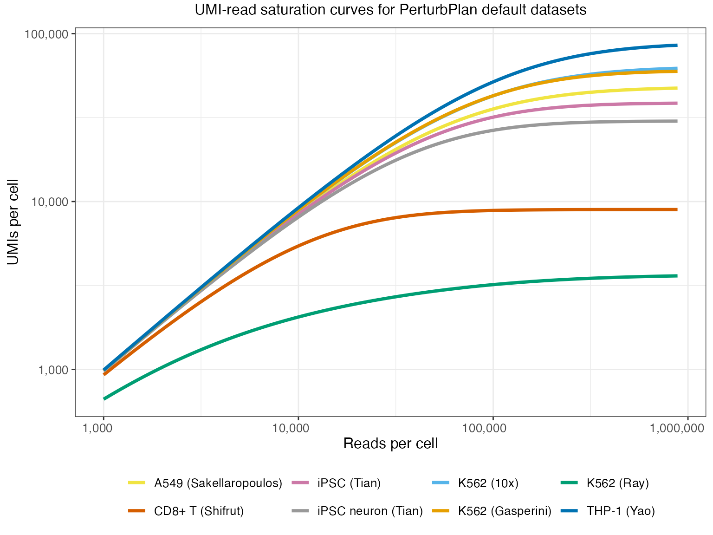

Preprocess Reference Expression data for Web App
preprocess-reference.RmdThis vignette demonstrates how to preprocess your own perturb-seq pilot data for use with the PerturbPlan web application and power analysis functions.
library(perturbplan)
library(ggplot2)
library(dplyr)
#>
#> Attaching package: 'dplyr'
#> The following objects are masked from 'package:stats':
#>
#> filter, lag
#> The following objects are masked from 'package:base':
#>
#> intersect, setdiff, setequal, unionOverview
This preprocessing workflow consists of two main steps:
-
reference_data_preprocessing_10x(): Loading raw data from multiple SRR runs of raw Cell Ranger outputs and processing them into a list containing:- Gene-by-cell expression matrix
- UMI-level molecule information dataframe
- Proportion of reads confidently mapped to the whole transcriptome among all reads
-
reference_data_processing(): Fitting statistical models with the output from Step 1 and obtaining expression data, library and sequencing parameters required for power analysis. These parameters include:-
Baseline expression statistics: Baseline gene
expression data:
response_id,relative_expressionandexpression_size -
Library parameters: Reads-UMI saturation curve
parameters from preseqR including:
method_used(ZTNB/RFA),UMI_per_cell_at_saturation,reads_norm,n_cells, and method-specific parameters. These characterize library size and sequencing saturation dynamics given the cell type and assay of interest - Mapping efficiency: Proportion of reads that are confidently mapped to the transcripts of genes we’re interested in.
-
Baseline expression statistics: Baseline gene
expression data:
The output after the two-step preprocessing can be uploaded to the Web App as custom reference data.
Step 1: Process Cell Ranger Outputs
The reference_data_preprocessing_10x() function
aggregates Cell Ranger outputs from multiple sequencing runs (SRRs) into
a single data structure.
Input Requirements
Your data should be organized with Cell Ranger output directories under a top-level folder:
path_to_top_level_output/
├── SRR_run_1/
│ ├── outs/
│ │ ├── filtered_feature_bc_matrix/
│ │ │ ├── barcodes.tsv.gz
│ │ │ ├── features.tsv.gz
│ │ │ └── matrix.mtx.gz
│ │ ├── molecule_info.h5
│ │ ├── filtered_feature_bc_matrix.h5
│ │ └── metrics_summary.csv
├── SRR_run_2/
│ └── ...
└── SRR_run_3/
└── ...The SRR directories should be generated by a recent version of
Cell Ranger count (not Cell Ranger multi) configured
for the perturbation (CRISPR or Perturb-seq) workflow using standard
output format. For more information about input format and required
fields, see ?obtain_qc_response_data,
?obtain_qc_read_umi_table, and
?obtain_mapping_efficiency.
Note:
-
Cell Ranger multi is not currently supported
because: (1) its output directory structure places files under
outs/per_sample_outs/{sample_id}/count/instead of directly underouts/, and (2) itsmetrics_summary.csvuses a row-based format with “Library Type” and “Metric Name” columns, while Cell Ranger count uses a column-based format where metric names are column headers. - In some cases, the subfolder
filtered_feature_bc_matrixmay need to be created by unzipping thefiltered_feature_bc_matrix.tar.gzfile. - Each
metrics_summary.csvfile must include a column named “Number of Reads” (Cell Ranger count format), which is required to estimate mapping efficiency.
Function Usage
There’s an example SRR folder called cellranger_tiny
under the folder extdata in our package, and we’ll use that
for demonstration:
# Point to directory containing example Cell Ranger outputs
extdata_path <- system.file("extdata", package = "perturbplan")
# Aggregate data from all SRR runs
raw_data <- reference_data_preprocessing_10x(
path_to_top_level_output = extdata_path,
path_to_run_level_output = "cellranger_tiny", # Only read subfolder cellranger_tiny
h5_rough = TRUE, # Use first SRR for QC data (faster)
skip_mapping_efficiency = FALSE # Estimate mapping efficiency
)Arguments:
-
path_to_top_level_output: Path to directory containing Cell Ranger run-level subdirectories -
path_to_run_level_output: Optional character vector specifying subset of run directories to process -
h5_rough: IfTRUE(default), the function will extract the UMI-level molecule information dataframe from first SRR only for speed. IfFALSE, combines UMI-level molecule information from all SRRs -
skip_mapping_efficiency: IfTRUE, skips estimation of mapping efficiency. IfFALSE(default), calculates naive mapping efficiency using data from a properly formattedmetrics_summary.csvfile as described above.
Function Output
# Inspect structure
str(raw_data)
#> List of 3
#> $ response_matrix :Formal class 'dgCMatrix' [package "Matrix"] with 6 slots
#> .. ..@ i : int [1:11] 0 1 2 3 4 1 2 1 4 1 ...
#> .. ..@ p : int [1:9] 0 1 2 3 4 5 7 9 11
#> .. ..@ Dim : int [1:2] 5 8
#> .. ..@ Dimnames:List of 2
#> .. .. ..$ : chr [1:5] "ENSG00000243485" "ENSG00000238009" "ENSG00000239945" "ENSG00000241860" ...
#> .. .. ..$ : chr [1:8] "AGCAGCCGTCCAAGTT-1" "AAACGGGTCAGCTCGG-1" "AAAGTAGCATCCCACT-1" "AAACCTGGTATATGAG-1" ...
#> .. ..@ x : num [1:11] 1 1 1 1 1 1 1 1 1 1 ...
#> .. ..@ factors : list()
#> $ read_umi_table :'data.frame': 11 obs. of 5 variables:
#> ..$ num_reads : int [1:11] 2 1 1 2 1 1 1 1 1 1 ...
#> ..$ UMI_id : num [1:11] 139105 723247 998389 622094 584568 ...
#> ..$ cell_id : chr [1:11] "AAACCTGGTATATGAG-1" "AAACGGGTCAGCTCGG-1" "AAAGTAGCATCCCACT-1" "AAAGTAGTCCAAATGC-1" ...
#> ..$ response_id: chr [1:11] "ENSG00000241860" "ENSG00000238009" "ENSG00000239945" "ENSG00000286448" ...
#> ..$ srr_idx : chr [1:11] "cellranger_tiny" "cellranger_tiny" "cellranger_tiny" "cellranger_tiny" ...
#> $ mapping_efficiency: num 1Format of each output:
-
response_matrix: a sparse gene-by-cell expression matrix (genes as rows, cells as columns) with row and column names -
read_umi_table: a dataframe with UMI-level molecule information, including columns:-
num_reads: Number of reads supporting this UMI-cell combination -
UMI_id: UMI index of this UMI-cell combination -
cell_id: Cell barcode of this UMI-cell combination -
response_id: Gene identifier (e.g., Ensembl ID) -
srr_idx: SRR run identifier of the UMI
-
-
mapping_efficiency: A numeric value between 0 and 1 ifskip_mapping_efficiency = FALSE, and NULL ifskip_mapping_efficiency = TRUE. This represents the proportion of reads that are confidently mapped to the transcriptome and assigned to a true cell barcode (i.e., a cell barcode that appears in the filtered expression matrix) among all raw reads recorded inmetrics_summary.csv
Step 2: Extract Reference Data
The reference_data_processing() function fits
statistical models to extract gene expression data, library parameters
and more sophisticated mapping efficiency required by PerturbPlan. We
postpone the details of these two models to the end of this
document.
Input Requirements
The input format of the function is the same as the output format of
the function reference_data_preprocessing_10x().
Function Usage
We demonstrate two use cases of
reference_data_processing() with the aggregated data from
Step 1 (raw_data): one for perturb-seq experimental design
using all genes, and one for TAP-seq experimental design using a
targeted gene list.
# Set seed for reproducibility
set.seed(123)
# Process into final pilot data format with all genes, suitable for perturb-seq experimental design
pilot_data_perturbseq <- reference_data_processing(
response_matrix = raw_data$response_matrix,
read_umi_table = raw_data$read_umi_table,
mapping_efficiency = raw_data$mapping_efficiency,
gene_list = NULL, # Use all genes
TPM_thres = 0.1, # Default expression threshold for filtering
h5_only = FALSE, # Set TRUE to skip expression model fitting
n_threads = NULL # No parallel processing
)
#> Starting pilot data preprocessing @ 2026-01-26 12:39:38.974451
#> Step 1: Computing gene expression information...
#> Start relative expression calculation @ 2026-01-26 12:39:38.982427
#> Finish relative expression calculation @ 2026-01-26 12:39:38.983131
#> Number of genes passing TPM threshold: 5
#> Start dispersion estimation (12 thread(s)) @ 2026-01-26 12:39:38.983361
#> [theta_batch_cpp] Starting computation
#> - G (genes) = 5
#> - C (cells) = 8
#> [gene 0] rel_expr = 0.0909091
#> [gene 0] t_0 = 0.0747664
#> [gene 0] theta_mle_row result = 401.014
#> [gene 1] rel_expr = 0.363636
#> [gene 1] t_0 = 1.06889
#> [gene 1] theta_mle_row result = 484.176
#> [gene 2] rel_expr = 0.181818
#> [gene 2] t_0 = 0.272921
#> [gene 2] theta_mle_row result = 468.498
#> [gene 3] rel_expr = 0.181818
#> [gene 3] t_0 = 0.272921
#> [gene 3] theta_mle_row result = 468.498
#> [gene 4] rel_expr = 0.181818
#> [gene 4] t_0 = 0.272921
#> [gene 4] theta_mle_row result = 468.498
#> [theta_batch_cpp] Done.
#> Finish dispersion estimation @ 2026-01-26 12:39:38.984562
#> Step 2: Estimating library parameters...
#> Completed pilot data preprocessing @ 2026-01-26 12:39:38.987927
#> Processed 5 genes
#> UMI_per_cell_at_saturation = 5, Model = ZTNB
#> Mapping efficiency = 1
# Process into pilot data format with targetd genes only, suitable for TAP-seq experimental design
gene_list <- c("ENSG00000241860", "ENSG00000238009", "ENSG00000239945")
pilot_data_tapseq <- reference_data_processing(
response_matrix = raw_data$response_matrix,
read_umi_table = raw_data$read_umi_table,
mapping_efficiency = raw_data$mapping_efficiency,
gene_list = gene_list, # Restrict to specific genes
TPM_thres = 0 # No expression threshold for filtering
)
#> Starting pilot data preprocessing @ 2026-01-26 12:39:38.988754
#> Step 1: Computing gene expression information...
#> Start relative expression calculation @ 2026-01-26 12:39:38.993749
#> Finish relative expression calculation @ 2026-01-26 12:39:38.993964
#> Number of genes passing TPM threshold: 3
#> Start dispersion estimation (12 thread(s)) @ 2026-01-26 12:39:38.994181
#> [theta_batch_cpp] Starting computation
#> - G (genes) = 3
#> - C (cells) = 8
#> [gene 0] rel_expr = 0.5
#> [gene 0] t_0 = 1.33333
#> [gene 0] theta_mle_row result = 486.513
#> [gene 1] rel_expr = 0.25
#> [gene 1] t_0 = 0.5
#> [gene 1] theta_mle_row result = 475.754
#> [gene 2] rel_expr = 0.25
#> [gene 2] t_0 = 0.5
#> [gene 2] theta_mle_row result = 475.754
#> [theta_batch_cpp] Done.
#> Finish dispersion estimation @ 2026-01-26 12:39:38.994721
#> Step 2: Estimating library parameters...
#> Completed pilot data preprocessing @ 2026-01-26 12:39:38.996776
#> Processed 3 genes
#> UMI_per_cell_at_saturation = 6, Model = ZTNB
#> Mapping efficiency = 0.727Arguments:
-
response_matrix: Gene-by-cell expression matrix from Step 1 (or NULL ifh5_only = TRUE) -
read_umi_table: QC dataframe from Step 1 -
mapping_efficiency: Mapping efficiency from Step 1 -
gene_list: Optional character vector to restrict analysis to specific genes -
TPM_thres: Threshold for filtering lowly expressed genes (default: 0.1) -
h5_only: IfTRUE, the function will skip the construction of baseline expression dataframe to save time (default: FALSE) -
n_threads: Number of parallel processing threads (default: NULL for single-threaded)
Note: The library estimation uses preseqR’s data-adaptive saturation curve fitting, which automatically selects between ZTNB (Zero-Truncated Negative Binomial) and RFA (Rational Function Approximation) methods based on the shape of the read-UMI distribution. This ensures optimal parameter estimation without requiring manual method selection.
Function Output
# Inspect structure of perturb-seq pilot data
str(pilot_data_perturbseq)
#> List of 3
#> $ baseline_expression_stats:'data.frame': 5 obs. of 3 variables:
#> ..$ response_id : chr [1:5] "ENSG00000243485" "ENSG00000238009" "ENSG00000239945" "ENSG00000241860" ...
#> ..$ relative_expression: num [1:5] 0.0909 0.3636 0.1818 0.1818 0.1818
#> ..$ expression_size : num [1:5] 401 484 468 468 468
#> $ library_parameters :List of 7
#> ..$ method_used : chr "ZTNB"
#> ..$ L : num 37.8
#> ..$ size : num 10000
#> ..$ mu : num 0.344
#> ..$ reads_norm : num 1.62
#> ..$ n_cells : num 8
#> ..$ UMI_per_cell_at_saturation: num 4.72
#> $ mapping_efficiency : num 1
# Inspect structure of TAP-seq pilot data
str(pilot_data_tapseq)
#> List of 3
#> $ baseline_expression_stats:'data.frame': 3 obs. of 3 variables:
#> ..$ response_id : chr [1:3] "ENSG00000238009" "ENSG00000239945" "ENSG00000241860"
#> ..$ relative_expression: num [1:3] 0.5 0.25 0.25
#> ..$ expression_size : num [1:3] 487 476 476
#> $ library_parameters :List of 7
#> ..$ method_used : chr "ZTNB"
#> ..$ L : num 36.2
#> ..$ size : num 10000
#> ..$ mu : num 0.25
#> ..$ reads_norm : num 1.5
#> ..$ n_cells : num 6
#> ..$ UMI_per_cell_at_saturation: num 6.03
#> $ mapping_efficiency : num 0.727Format of each output:
-
baseline_expression_stats: Dataframe with columns:-
response_id: Ensembl gene identifier -
relative_expression: Estimated relative expression proportions for each gene, normalized to sum to 1 across all genes of interest -
expression_size: Estimated dispersion representing gene-specific expression variability
-
-
library_parameters: List with saturation curve parameters from preseqR (rSAC_fn_wrapper format):-
method_used: Selected method (“ZTNB” or “RFA”) -
UMI_per_cell_at_saturation: Estimated maximum UMI count per cell at infinite sequencing depth -
reads_norm: Normalization constant (reads per cell in pilot data) -
n_cells: Number of cells in pilot data - Additional method-specific parameters (e.g., L, size, mu for ZTNB; coefs and poles for RFA)
-
-
mapping_efficiency: Adjusted mapping efficiency, accounting for the fraction of reads mapped to the genes of interest
Note: The relative expression is higher and the mapping efficiency is lower in the TAP-seq example because of significantly smaller target gene panel compared to Perturb-seq.
Statistical Models Used in Step 2
The reference_data_processing() function fits two
statistical models to extract parameters needed for power analysis.
Negative Binomial Expression Model
For each gene, the function fits a negative binomial (NB) model to characterize the distribution of gene expression levels across cells. The model estimates two parameters for each gene:
-
relative_expression: The relative expression level of the gene -
expression_size: The dispersion parameter (reciprocal of variance relative to mean)
These parameters capture both the average expression level and the biological variability of each gene across cells.
Read-UMI Saturation Curve (preseqR)
The function uses the preseqR package to fit a
saturation curve that relates sequencing reads to unique UMI counts. The
preseqR approach:
-
Data-adaptively selects between two methods based
on the estimated shape parameter:
- ZTNB (Zero-Truncated Negative Binomial): Used when shape > 1, provides closed-form predictions
- RFA (Rational Function Approximation): Used when shape ≤ 1, provides better extrapolation for low-complexity libraries
-
In rare edge cases, if the RFA estimator is invalid
(rarely occurs in practice), the function returns a constant prediction
based on the observed data. In this case, the saved parameters include:
-
method_used = "RFA"(method attempted) -
valid_estimator = FALSE(indicates invalid estimator) -
constant_value: The total observed UMI count -
UMI_per_cell_at_saturation: Set to observed UMI per cell - Standard parameters:
reads_norm,n_cells
-
-
Estimates key parameters:
-
UMI_per_cell_at_saturation: Maximum UMI count per cell at infinite sequencing depth - Method-specific parameters for accurate saturation curve prediction
-
The preseqR methodology provides robust parameter estimation without requiring manual method selection or parameter tuning. The data-adaptive approach ensures optimal performance across diverse experimental designs and library complexities.
Comparing Default Dataset Saturation Curves
PerturbPlan includes several default datasets from different cell types and experimental systems. This section demonstrates how to visualize and compare the read-UMI saturation curves across all default datasets.
Load Default Datasets
# Load all perturbplan default datasets
data("K562_Gasperini", package = "perturbplan")
data("K562_10x", package = "perturbplan")
data("K562_Ray", package = "perturbplan")
data("A549_Sakellaropoulos", package = "perturbplan")
data("THP1_Yao", package = "perturbplan")
data("T_CD8_Shifrut", package = "perturbplan")
data("iPSC_Tian", package = "perturbplan")
data("iPSC_neuron_Tian", package = "perturbplan")
# Create a list of all datasets with their display names
default_datasets <- list(
"K562 (Gasperini)" = K562_Gasperini,
"K562 (10x)" = K562_10x,
"K562 (Ray)" = K562_Ray,
"A549 (Sakellaropoulos)" = A549_Sakellaropoulos,
"THP-1 (Yao)" = THP1_Yao,
"CD8+ T (Shifrut)" = T_CD8_Shifrut,
"iPSC (Tian)" = iPSC_Tian,
"iPSC neuron (Tian)" = iPSC_neuron_Tian
)Generate Saturation Curve Predictions
# Find the maximum UMI_per_cell_at_saturation across all datasets
max_umi_saturation <- max(sapply(default_datasets, function(dataset_obj) {
dataset_obj$library_parameters$UMI_per_cell_at_saturation
}))
# Create a grid of reads_per_cell values for prediction
# Extend to 10x the maximum UMI saturation
reads_grid <- 10^seq(log10(1000), log10(max_umi_saturation * 10), length.out = 200)
# Generate predictions for each dataset using perturbplan:::fit_read_UMI_curve_cpp
all_datasets_df <- bind_rows(
lapply(names(default_datasets), function(dataset_name) {
dataset_obj <- default_datasets[[dataset_name]]
library_params <- dataset_obj$library_parameters
library_size_pred <- perturbplan:::fit_read_UMI_curve_cpp(reads_grid, library_params)
data.frame(
reads_per_cell = reads_grid,
library_size = library_size_pred,
dataset = dataset_name,
stringsAsFactors = FALSE
)
})
)Visualize Saturation Curves
# Define color scheme for all datasets using a colorblind-friendly palette
dataset_colors <- c(
"K562 (Gasperini)" = "#E69F00", # orange
"K562 (10x)" = "#56B4E9", # sky blue
"K562 (Ray)" = "#009E73", # bluish green
"A549 (Sakellaropoulos)" = "#F0E442", # yellow
"THP-1 (Yao)" = "#0072B2", # blue
"CD8+ T (Shifrut)" = "#D55E00", # vermillion
"iPSC (Tian)" = "#CC79A7", # reddish purple
"iPSC neuron (Tian)" = "#999999" # gray
)
# Create the comparison plot
ggplot(all_datasets_df, aes(x = reads_per_cell, y = library_size, color = dataset)) +
geom_line(linewidth = 1.25) +
scale_color_manual(values = dataset_colors) +
scale_x_log10(labels = scales::comma) +
scale_y_log10(labels = scales::comma) +
labs(
x = "Reads per cell",
y = "UMIs per cell",
color = NULL,
title = "UMI-read saturation curves for PerturbPlan default datasets"
) +
theme_bw() +
theme(
plot.title = element_text(size = 12, hjust = 0.5, vjust = 2),
axis.title.x = element_text(size = 12),
axis.text.x = element_text(size = 10, hjust = 0.7),
axis.title.y = element_text(size = 12),
axis.text.y = element_text(size = 10),
legend.title = element_blank(),
legend.text = element_text(size = 10),
legend.position = "bottom"
)
Interpretation
This comparison plot reveals important differences in sequencing saturation characteristics across cell types and experimental systems:
- Saturation plateau: Different datasets reach different maximum UMI counts, reflecting differences in transcriptional complexity and library preparation protocols
- Cell type and assay consistency: K562 (Gasperini) and K562 (10x) share the same cell type and assay, and their curves are much closer to each other than to other datasets. This validates our approach of providing default data based on cell type and assay
- Implications for experimental design: These saturation curves inform optimal sequencing depth choices for different cell types
The fitted saturation curves from your own pilot data (generated in Step 2 above) can be used similarly to predict library sizes for power analysis in experimental design.
See Also
-
?reference_data_preprocessing_10x: Detailed documentation ofreference_data_preprocessing_10x(). -
?reference_data_processing: Detailed documentation ofreference_data_processing(). -
?obtain_qc_response_data,?obtain_qc_read_umi_table, and?obtain_mapping_efficiency: Documentation on obtaining each component of the output inreference_data_preprocessing_10x(). -
?obtain_expression_information: Documentation on fitting the negative binomial expression model inreference_data_processing(). -
?library_estimation: Documentation on fitting the read-UMI model inreference_data_processing().